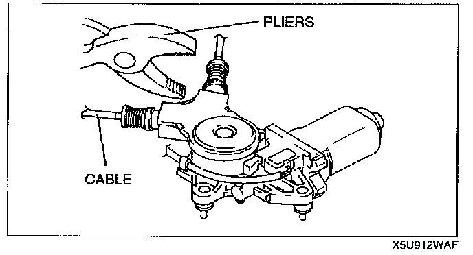
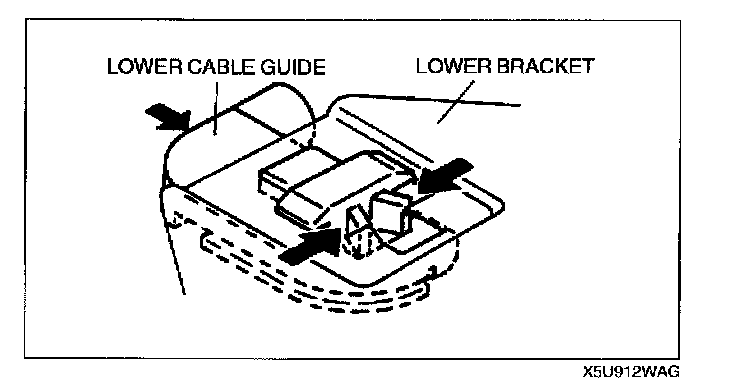
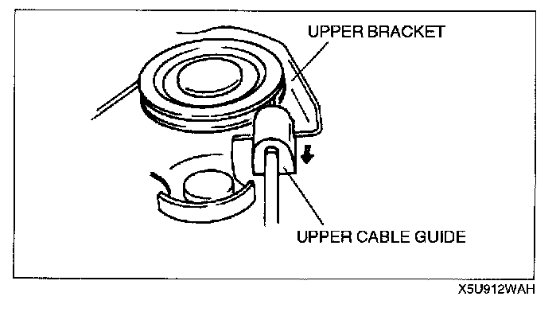
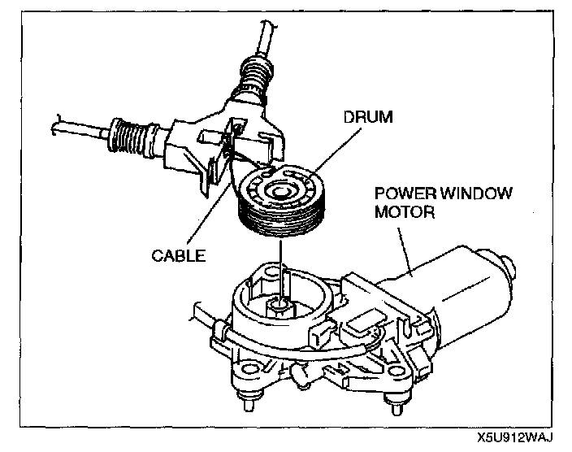
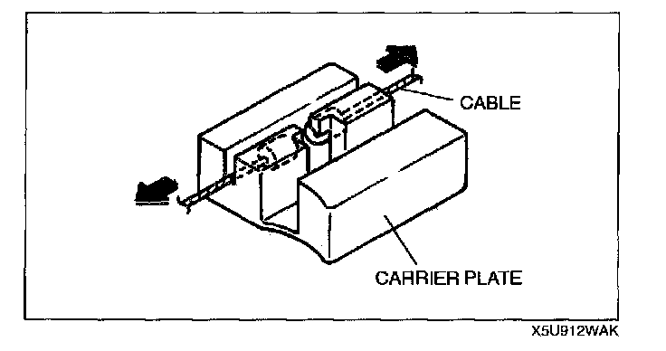
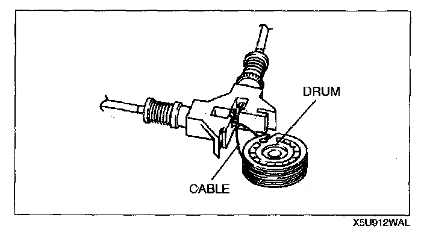
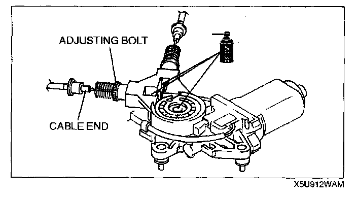
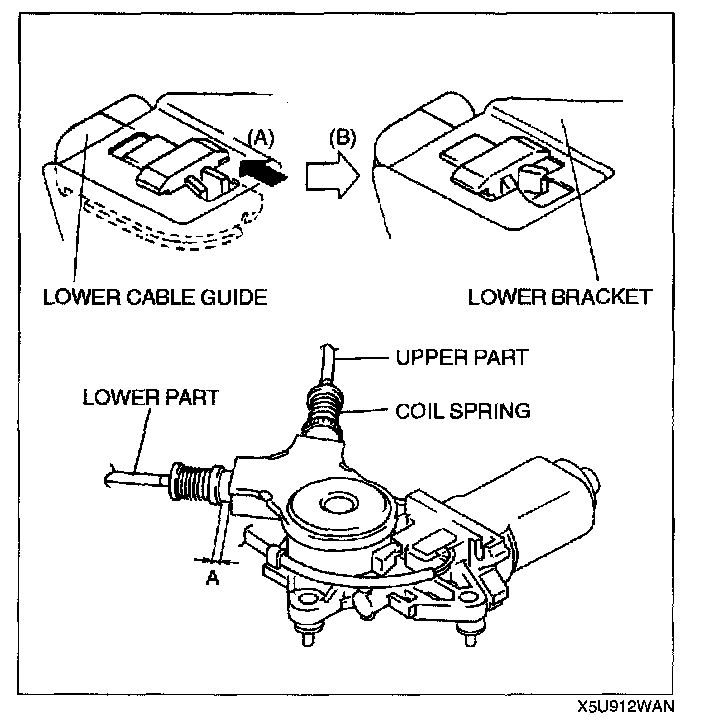
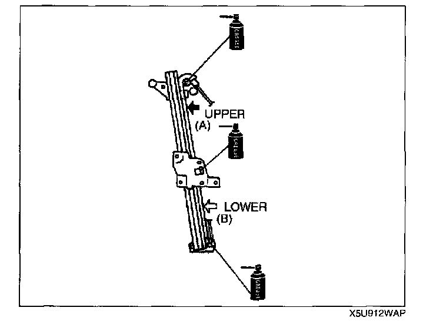

Power Window Regulator
POWER WINDOW REGULATOR REMOVAL/INSTALLATION1. Remove the front glass guide. (See DOOR GLASS AND GUIDE REMOVAL/INSTALLATION.)
2. Disconnect the negative battery cable.

3. Remove in the order indicated below.
1. Connector
2. Nut
3. Power window regulator
4. Install in the reverse order of removal.
5. Adjust the door glass.
POWER WINDOW REGULATOR DISASSEMBLY

1. Tighten the adjusting bolt with pliers and loosen the cable.

2. Disassemble the lower cable guide from the lower bracket with pliers.

3. Disassemble the upper cable guide from the upper bracket.
4. Disassemble the drum cover.

5. Take out the drum and disassemble the cable.

6. Pull the ends of the cables and disassemble from the carrier plate one at a time.
7. Disassemble the adjusting bolts.
POWER WINDOW REGULATOR ASSEMBLY

1. Tighten the adjusting bolts fully.
2. Assemble the ends of the cables to the carrier plate.
3. Insert the cables into the adjusting bolts.
4. Wind the cable around the top part of the drum three times and the bottom part twice or around the top part twice and the bottom part three times.
5. Assemble into the power window motor. Taking care to prevent the cable from getting caught between the drum and the motor and the motor housing, carefully assemble the cable onto the upper bracket pulley.
6. Verify that the ends of the cables are inserted into the adjusting bolts, shift the lower cable guide until a clicking sound is heard, and assemble to the lower bracket.

7. Apply grease to the parts shown in the figure.
8. Assemble the drum cover.

9. For the upper part, pull the (A) part of the cable and for the lower part, pull the (B) part of the cable. Adjust the adjusting bolts, making sure the coil springs do not bend.
Adjustment range:
A: 0.5 - 7.5 mm {0.1 - 0.2 in}
10. Fix the adjusting bolts with the thread lock.

11. Apply grease to places where the cable moves along the pulley and to the ends of the cables.
12. After assembling, verify that the cable isn't damaged.